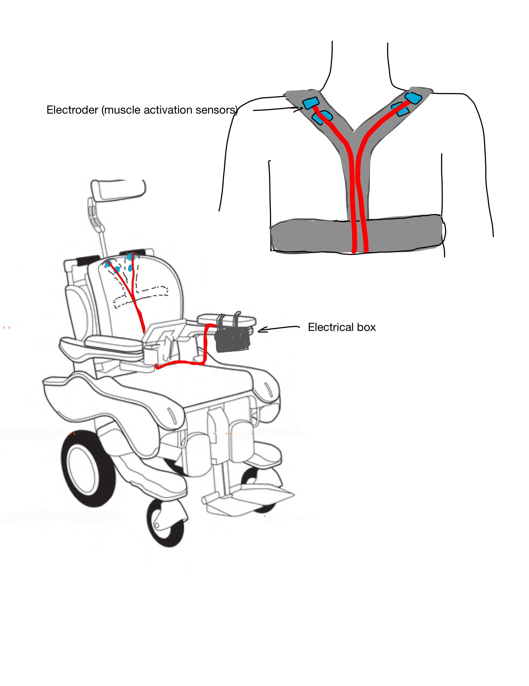

biofeedback sensor
2022 / Software Engineer

Skills: C, Arduino, MATLAB, Bluetooth, Circuit Design
Company: UBC Biomedical Engineering Student Team

2022 Simon Cox Design Competition Finalist!
The Problem
Prolonged involuntary muscle activation of the trapezius muscle creates back pain
in patients with mobility impairments.
Our Solution
We created a small, wearable device which detects muscle activation and
notifies the user via Bluetooth audio feedback to the client's headset. We built our
prototype while adhering to these design needs:
- Pain relief: awareness to relax muscles before they cause tension and pain
- Independence: gives the client an ability to rehabilitate in their own time
- Portability: inconspicuous design allows for all-day wear
Audio Feedback
I established a pipeline using serial port communication to read streaming data from an Arduino HC-05 into
MATLAB. In MATLAB, I analyzed live electromyography signals to identify voltage thresholds which relate to
muscle activations. Then, these thresholds were used to automatically signal a piezo buzzer.
Prototype Sketch
Prototype Demo